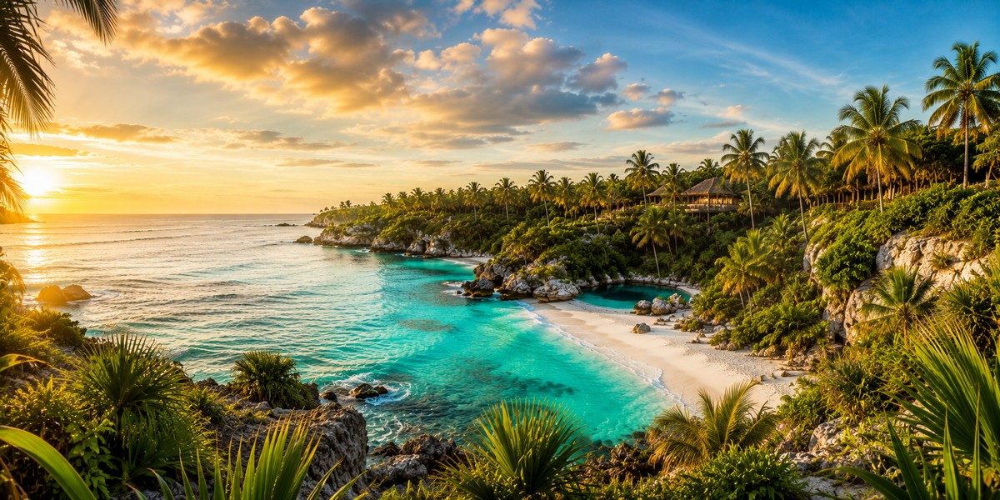
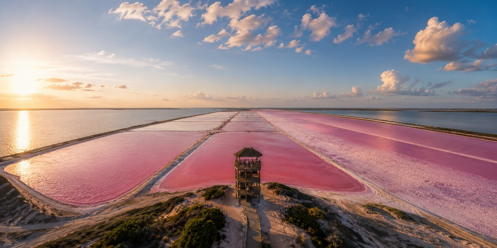

Перша поїздка до Мексики: Канкун, Рив'єра-Майя, Тулум чи Пунта-Кана?
Чесний розбір з акцентом на рішення: куди поїхати в першу карибську пляжну поїздку — Канкун, Рив'єра-Майя, Тулум чи Пунта-Кана, і кому кожен напрямок реально підходить.

Усвідомлений вибір напрямків, готелів і формату відпочинку — без помилок і переплат.
Обрати країну →Три принципи, які допомагають обирати відпочинок усвідомлено.
Шукаємо повторювані скарги та збіги у відгуках, а не орієнтуємось лише на загальний рейтинг.
Оцінюємо рельєф, відстань до пляжу та реальне розташування готелю через карту та фото гостей.
Перевіряємо податки, курортні збори та умови скасування, щоб бачити реальну ціну відпочинку.
Зараз головний фокус — Мексика, а Єгипет і Туреччина залишаються як додаткові розділи
Гіди по курортах та готелях Мексики
Канкун, Плая-дель-Кармен і Тулум
Планування подорожі без помилок бронювання
Гіди по курортах Червоного моря
Перельоти, готелі та підготовка до поїздки
Курорти, пляжі та практичні поради
Гіди по Стамбулу та морських курортах
Райони, готелі та планування подорожі
Розумний вибір курорту та локальні поради
Три базові гайди, які варто прочитати найперше

Чесний розбір з акцентом на рішення: куди поїхати в першу карибську пляжну поїздку — Канкун, Рив'єра-Майя, Тулум чи Пунта-Кана, і кому кожен напрямок реально підходить.

Перед бронюванням готелю в Канкуні перевірте район, пляж, відгуки, фінальну ціну, номер, формат курорту й умови скасування.

Що насправді означають попередження США та Канади, які щоденні ризики важливіші за все для туристів і як подорожувати Рив'єрою-Майя без помилок, яких легко уникнути.

Майже ідеальна пляжна погода, рідкісні вітряні дні через «норте», святкові натовпи туристів, пікові ціни та як грамотно бронювати відпочинок у високий сезон.

Справжня літня спека, щоденні післяобідні грози, літній саргасум 2026 року, сезон ураганів та низькі ціни, які виправдовують літню поїздку.

Коли вони проходять, де насправді вечірки, як це впливає на ціни, і як уникнути натовпів, не відмовляючись від Канкуна.

Де краще зупинитися, як знайомитися з людьми, чесно про безпеку та скільки насправді коштує поїздка наодинці на Рив'єру-Майя.

Чесна відповідь, чи підходить Канкун для немовляти: спокійні райони з мілкою водою, перевірки готелю, вода й суміш, автокрісло для трансферу, сонце, спека і педіатрична допомога.

Не платіть 3% комісії за закордонні операції, обійдіть пастку DCC, знімайте песо в банкоматах без зайвих зборів і беріть дві правильні картки до Мексики.
Без візи до 180 днів, без правила шести місяців на паспорт, паперовий FMM скасовано, що треба декларувати — і чому повні 180 днів більше не дають автоматично.

Універсальна база, правила рифобезпечного крему, що купити після прильоту та що залишити вдома — список речей у Канкун і Рив'єру-Майя під вашу реальну поїздку.

Ні, купатися в ньому не можна, і ні, воно не завжди яскраво-рожеве. Чесний розбір довгої дороги на північ, кому поїздка підійде і як краще зробити її частиною road trip Юкатаном.
Travel Radar LK — незалежний проєкт для тих, хто хоче планувати подорожі усвідомлено. Головний фокус зараз — Мексика і Кариби, а Єгипет і Туреччина залишаються як додаткові розділи. Тут зібрані практичні статті, порівняння локацій і чесні travel-розбори без зайвого шуму.
Якщо десь на сайті є партнерські посилання, ми позначаємо це прямо. Докладніше про проєкт →